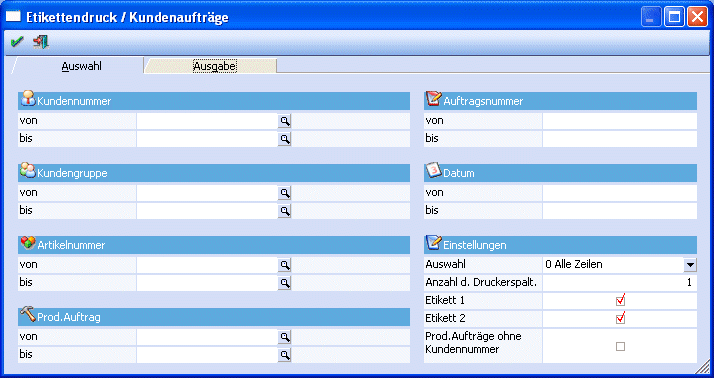
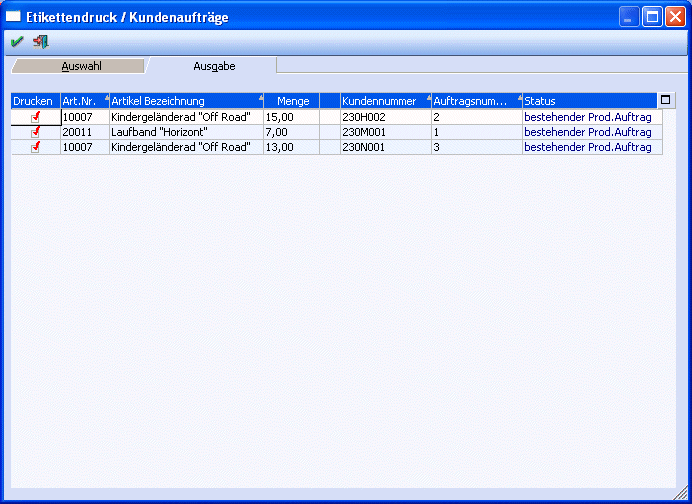

Im Menüpunkt
1 WinLine PPS
1 Auswertungen
1 Etikettendruck
kann pro Artikel, der in einem kundenspezifischen Produktionsauftrag enthalten war, ein Etikett gedruckt werden.

Ø Kundennummer von - bis
Einschränkung der Kunden, für deren Aufträge Artikeletiketten gedruckt werden sollen.
Ø Kundengruppe von - bis
Einschränkung der Kundengruppen.
Ø Auftragsnummer von - bis
Einschränkung der Aufträge, für die Artikeletiketten gedruckt werden sollen.
Ø Datum von - bis
Einschränkung auf das Datum der Aufträge, für die Artikeletiketten gedruckt werden sollen.
Ø Artikelnummer von - bis
Einschränkung der Artikel, für die Etiketten gedruckt werden sollen.
Ø Prod.Auftrag
Einschränkung auf die Produktionsaufträge, für die ein Etikett gedruckt werden soll.
Einstellungen
Ø Auswahl
Der Etikettendruck kann für
ü Alle Zeilen
ü nur angelegte Prod.Aufträge(Aufträge die bereits eingelesen wurden)
ü noch nicht eingelesene Prod.Aufträge
erfolgen.
Ø Anzahl der Druckerspalt.
Damit die Etiketten z.B. zweibahnig gedruckt werden, muss zunächst das Formular dementsprechend angepasst und hier die Anzahl der Bahnen eingetragen werden.
Ø Etikett 1 / Etikett 2
Durch Aktivieren der Optionen kann entschieden werden ob das Etikettenformular 1 und/oder Etikettenformular 2 gedruckt wird.
Hinweis:
Für das Etikett1 wird das Formular P20W760 und für das Etikett2 wird das Formular P20W761 verwendet. Um z.B. zweibahnige Etiketten zu erhalten, müssen die Variablen 2x am Formular hinterlegt werden (1x pro Bahn) und zusätzlich muss beim Ausdruck Anzahl der Spalten 2 eingetragen werden.
Nach Drücken des OK-Buttons gelangt man in das zweite Register "Ausgabe", in dem alle der Selektion entsprechenden Artikel für den Etikettendruck vorgeschlagen werden.

Nach Druck des O.K.-Buttons wird für alle Zeilen, bei denen das Häkchen "Drucken" gesetzt ist, ein Etikett gedruckt.